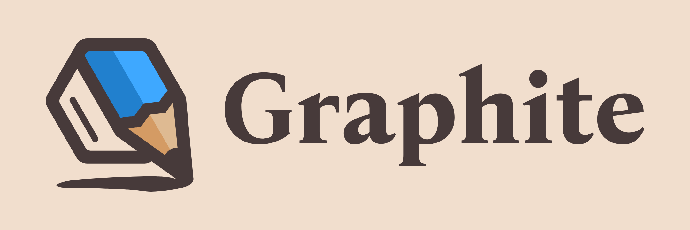

This Month in Rust GameDev #31 - February 2022
Welcome to the 31st issue of the Rust GameDev Workgroup's monthly newsletter. Rust is a systems language pursuing the trifecta: safety, concurrency, and speed. These goals are well-aligned with game development. We hope to build an inviting ecosystem for anyone wishing to use Rust in their development process! Want to get involved? Join the Rust GameDev working group!
You can follow the newsletter creation process by watching the coordination issues. Want something mentioned in the next newsletter? Send us a pull request. Feel free to send PRs about your own projects!
- Bevy Jam
- Rust GameDev Meetup
- Rust GameDev Showcase
- Game Updates
- Learning Material Updates
- Engine Updates
- Tooling Updates
- Library Updates
- Other News
- Discussions
- Requests for Contribution
- Jobs
Bevy Jam #1

The first-ever Bevy Jam just finished! Bevy Jam is a week-long event, where the goal is to make a game in Bevy Engine, the free and open-source game engine built in Rust.
The theme was Unfair Advantage. 431 people joined the jam and 75 teams submitted entries. A ten-day "voting period" has started, which will end on March 14th. Anyone can play and vote on the submissions.
The winning team will receive any two items from the Bevy Merch store.
Rust GameDev Meetup

The 13th Rust Gamedev Meetup took place in February. You can watch the recording of the meetup here on Youtube. The meetups take place on the second Saturday every month via the Rust Gamedev Discord server and are also streamed on Twitch.
Rust GameDev Showcase
The Rust Gamedev Working Group is working on a showcase of games made in Rust! If you're interested in submitting your own footage, fill out this form. You can also read more about the process of creating the showcase in the showcase discussion on Github. The deadline for submissions has been extended until the 19th of March 2022. Hope to see your game in there!
Game Updates
Name Needed
The player orders a selection of blocks to be broken, and a brick wall to be built.
Name Needed by @DomWilliams0 is a one-man effort to produce an open source, intuitive, and high-performance Dwarf Fortress-esque game with a custom engine.
Recent progress has been on procedural terrain generation, the player UI, item
stacks, and build jobs. A major refactor of the AI system integrated Rust's
superb async/await support, which is documented in the most recent devlog.
This is Fine Sokoban
 Screenshot of This is Fine Sokoban
Screenshot of This is Fine Sokoban
This is Fine Sokoban (GitHub) by @Syn-Nine is a Sokoban game inspired by the This is Fine meme created for the Game Developers Refuge 4x4x4 Challenge in February 2022. Use the arrow keys to push the TPS reports into the file folders while the room is burning down and you're surrounded by clocks - a metaphor for the developer's work life.
The 4x4x4 Challenge was to create a game based on four emojis. In this case the chosen emoji combination was: :nerd_face: :open_file_folder: :clock830: :fire:
The game is part of an open source repository of several mini-games that use Syn9's Rust Mini Game Framework.
Build A Better Buddy

Build A Better Buddy is a cute auto-battler built by @cart_cart using Bevy Engine for Bevy Jam #1. The source code is available here. It runs on Windows, Mac, Linux, and the Web.
Weegames

Weegames is a fast-paced minigame collection available on web and Windows. The latest release:
- Uses quad-storage on WASM to save high scores and a record of how games the player has played
- Fixes bug where the game was being played at an incorrect speed when the player's monitor was not 60hz
- Adds 8 more minigames
Dis-order
Dis-order by @jkhelsing is a short sokoban-esque puzzle game made in 72 hours for MiniJam 100. In Dis-order you're making chaos instead of order, you win when there are no patterns or order in the level.
It's made using Bevy and uses bevy_smud for shape rendering, and a compute pass for the particle effects. The levels are made with ldtk and loaded using bevy_ecs_ldtk. Read more about this in the post-mortem.
Molecoole

Molecoole is a top-down shooter roguelike where you build your character from different atoms. Each atom has a unique ability to provide tons of variety between playthroughs. It's made using the Bevy Engine.
This month Molecoole launched on Steam, making it the first game made with Bevy Engine there! It's available on Windows and Linux. You can check out its gameplay on youtube, or on the Steam page.
Veloren
 Looking out over the Gnarling fort
Looking out over the Gnarling fort
Veloren is an open world, open-source voxel RPG inspired by Dwarf Fortress and Cube World.
In February, Veloren 0.12 was released. For the release, a trailer with some of the changes was posted. This release was 5 months in the making, so the changelog is quite large. During the release party, the official server reached a cap of 195 players online at once, which is another record for Veloren. Changes were made to allow server owners to handle IPv4 and IPv6 connections. Improvements were also made to trading price calculations to properly normalize loot tables.
Two Veloren Reading Clubs were held in February. The first one explored using Git to contribute, and how to add some new NPC characters. The second one explored how some of Git's more intricate features worked, as well as how economy simulations are done. Work was done to allow species to defend others of the same species, to allow for more realistic combat in the wild. A Mastodon page was also created for Veloren. Gnarlings forts were also added, which adds a whole new area for players to fight in.
February's full weekly devlogs: "This Week In Veloren...": #158, #159, #160, #161.
Engine Updates
DIMS
@jfnoren (Twitter, Github) posted a video about a first look into their engine, DIMS. DIMS allows you to create open worlds, script gameplay, and mess around with physics. DIMS has been in the works for several months, but you can now sign up for early access on their website.
Learning Material Updates
Bevy Minesweeper
 Demo Screenshot
Demo Screenshot
@ManevilleF published a 12 step course on how to make a simple 2D Minesweeper using bevy 0.6. A public repository is available, as well as a live demo.
The tutorial showcases:
- essential features of the bevy engine
- important ECS notions for beginners
- WASM build
- and soon, android native APK build
Computing image filters with wgpu-rs
@Redwarp posted a blog post that goes through the process of creating a simple image processing pipeline with compute shaders, using wgpu-rs. The post takes you through several steps in this process:
- Wgpu basics
- Loading a texture
- A simple shader
- Bind group
- Workgroup and dispatch
Actor Pattern with Async Rust
@Sorokya (Twitter, Github) published a blog post about how they improved their game server by switching over to an actor pattern approach. This method allowed the server to be refactored to be more modular and cleaner.
Godot-Rust to Android without Android Studio
Proof of concept Godot app running on Android
@coffeecodechem published a blog post on how to export godot-rust as an Android APK on Windows without using Android Studio. It goes beyond the godot-rust book that specifies "steps are tested and confirmed to work on Linux only", and details what is needed to make it work on Windows.
The post shows how to set up the JDK and Rust, set up the keystore, and how to build the required GDNative libraries.
Supercharging your Web with Rust and Bevy
Bruno Lipovac released a blog post that detailed building 3D applications for use on the web with Bevy. It walks through setting up a Bevy project and importing some models. It also details some more fine-detail items, such as lighting and sky. It then shows how to compile the project and serve it.
Tooling Updates
Vismut

Vismut (GitLab, Zulip) by @lukors will be a procedural texturing tool.
This application saw its first public release a month ago, where it added support for its first use case: manual channel shuffling.
The latest version, v0.4.0, brings an all-new interface that's
not only prettier but also much easier to use thanks to bevy_egui!
Upcoming versions will turn it into a fully-featured node-based procedural texturing tool. Read the introduction on the author's blog for more information.
Blackjack
Blackjack by @setzer22 is a new procedural modeling application made in Rust, using rend3, wgpu, and egui. It follows the steps of applications like Houdini, or Blender's geometry nodes project and provides a node-based environment to compose procedural recipes to create 3d models.
The last two months have been quite busy for Blackjack. After an initial open source release, several new features have been added:
- Added a resizeable viewport system, with node graph pan and zoom.
- Built an initial implementation for a properties inspector and geometry spreadsheet panels.
- Added a subdivision node, with a fast catmull-clark subdivision technique based on this recent paper
- Separated the node graph functionality into its own crate
Discussions: /r/rust_gamedev, /r/rust
Graphite

Graphite is an in-development raster and vector 2D graphics editor that is free and open source. It will be powered by a node graph compositing engine that supercharges your layer stack, providing a completely non-destructive editing experience.
After officially launching the alpha version last month, work has progressed in designing the node graph system. Also, the team has spent this month adding polish to the application and continuing work on more website content.
A new editor feature is the Gradient tool which makes it possible to add some colorful pizzazz. This means that finally all vector editing tools are implemented, but some can still use improvement. (Ask how you can help with that!) Additional work has gone into visual changes to help aid in clarity and discoverability for new users.
Check out the new website, try the Graphite editor right now in your browser, star on GitHub, follow on Twitter, and join the Discord to chat or get involved!
Library Updates
vach
vach is an archiving file format developed from the ground up for games and other real-time applications by @zeskeertwee and @sokorototo. It is written in pure Rust.
Its primary objectives (in no particular order) are:
- Have a simple, yet complete API.
- Fine control over each individual entry in an archive, i.e. neighbouring entries can have vastly different compression schemes.
- Support compression (with multiple compression schemes), encryption, and signatures for data authentication
- Efficient fetching of data by avoiding unnecessary traversal of the file. Once a file is parsed, locations of every entry are known to the loader.
- Be as compact as possible - the smallest valid archive is only 13 bytes.
- Each entry has some metadata attached to it - this is implemented using bitflags and up to 8 bits are free to the user.
- Has multithreaded implementations of both the loader and the writer.
A CLI is allowing one to use vach as a general-purpose archive format. The CLI is fully multithreaded, allowing for insane un/packing speeds.
Feel free to drop into the repo and open an issue, pull request, or drop a star 🌟. It helps maintain momentum in the project.
Sparsey 0.7

Sparsey by @LechintanTudor is a sparse set-based Entity Component System with a beautiful and concise syntax.
The biggest change in this release was the removal of component change detection which had a significant impact on performance and memory usage. As a result, Sparsey performs much better in all benchmarks and the codebase is easier to maintain.
The systems module received a major overhaul with an improved scheduling
algorithm, allowing more systems to run in parallel, and an important usability
improvement allowing systems to be added to schedules without having to call
.system() on the system functions.
Encase

Encase (docs.rs, crates.io) by @teoxoy is a new library that provides a mechanism to layout data into GPU buffers according to WGSL's memory layout rules.
Features
- supports all WGSL host-shareable types + wrapper types
(
&T,&mut T,Box<T>, ...) - extensible by design; most traits can be easily implemented for user-defined types via macros (see design)
- built-in support for data types from a multitude of crates (enabled via features)
- covers a wide area of use cases (see examples)
Example
use encase::{WgslType, UniformBuffer};
#[derive(WgslType)]
struct AffineTransform2D {
matrix: glam::Mat2,
translate: glam::Vec2
}
let transform = AffineTransform2D {
matrix: glam::Mat2::IDENTITY,
translate: glam::Vec2::ZERO,
};
let mut buffer = UniformBuffer::new(Vec::new());
buffer.write(&transform).unwrap();
let byte_buffer = buffer.into_inner();
// write byte_buffer to GPU
Notan
The first version of Notan was released. Notan aims to be a simple and portable multimedia layer, designed to make your own multimedia app on top of it without worrying too much about platform-specific code.
The main goal is to provide a set of APIs and tools that can be used to create your project ergonomically without enforcing any structure or pattern, always trying to stay out of your way. The idea is that you can use it as a foundation layer or backend for your next app, game engine, or game.
This first version comes with windowing, input, and rendering support on MacOS, Linux, Windows, and Web. Behind feature flags, you can use a fast 2D renderer, text rendering, and egui integration.
You can try Notan by adding it to your Cargo.toml -> notan = "0.1.0" or
checking the online demos.
bevy_asset_loader

bevy_asset_loader by @nikl_me is a Bevy plugin that aims to reduce boilerplate for asset handling in Bevy apps.
Last month saw the release of version 0.9 which added support for loading
asset configurations from .ron files like the one shown above. This allows for
resolving asset configurations like their file path or sprite sheet dimensions
at run time. The feature is called "dynamic assets" and enables use cases like
internationalised assets.
@nikl_me wrote a blog post about dynamic assets in bevy_asset_loader. The post outlines the idea of the feature and describes current and planned functionality.
Discussions
Other News
- Other game updates:
- Fish Fight introduced mod loading.
- vange-rs published a blog post about using Emscripten with Rust.
- makiomino.fun introduced a new level-up animation.
- country-slice added shadows and the ability to adjust wall height.
- flesh has a new animation for the mid-boss.
- Rustenstein 3D: Game programming like it's 1992 is an article walking through creating a Wolfenstein-like game in Rust.
- Making a 3D Super Munchers Clone with Bevy is a video walkthrough of creating a 3D game in Bevy.
- Vulkan with Rust by example is the latest post in a series about using Vulkan with Rust.
- Fyrox got assets to hot-reload.
- Hotham released a video demo of the engine.
- godot-rust introduced C#-style properties.
- cosync is a single-threaded executor for deferred async code for games.
- SPIR-Q v0.5 was released after two years of v0.4 maintenance.
- egui 0.17.0 was released, with custom text styles, any-sized fonts, and much more.
- sparticles-rs is a particle system generator.
- blender_bevy_toolkit is making process in opening Blender files in Bevy.
Requests for Contribution
- Graphite is looking for contributors to help build the new node graph and 2D rendering systems.
- winit's "difficulty: easy" issues.
- Backroll-rs, a new networking library.
- Embark's open issues (embark.rs).
- wgpu's "help wanted" issues.
- luminance's "low hanging fruit" issues.
- ggez's "good first issue" issues.
- Veloren's "beginner" issues.
- Amethyst's "good first issue" issues.
- A/B Street's "good first issue" issues.
- Mun's "good first issue" issues.
- SIMple Mechanic's good first issues.
- Bevy's "good first issue" issues.
Jobs
- Embark Studios (Stockholm/Hybrid Remote) - Various roles
That's all news for today, thanks for reading!
Want something mentioned in the next newsletter? Send us a pull request.
Also, subscribe to @rust_gamedev on Twitter or /r/rust_gamedev subreddit if you want to receive fresh news!
Discuss this post on: /r/rust_gamedev, Twitter, Discord.